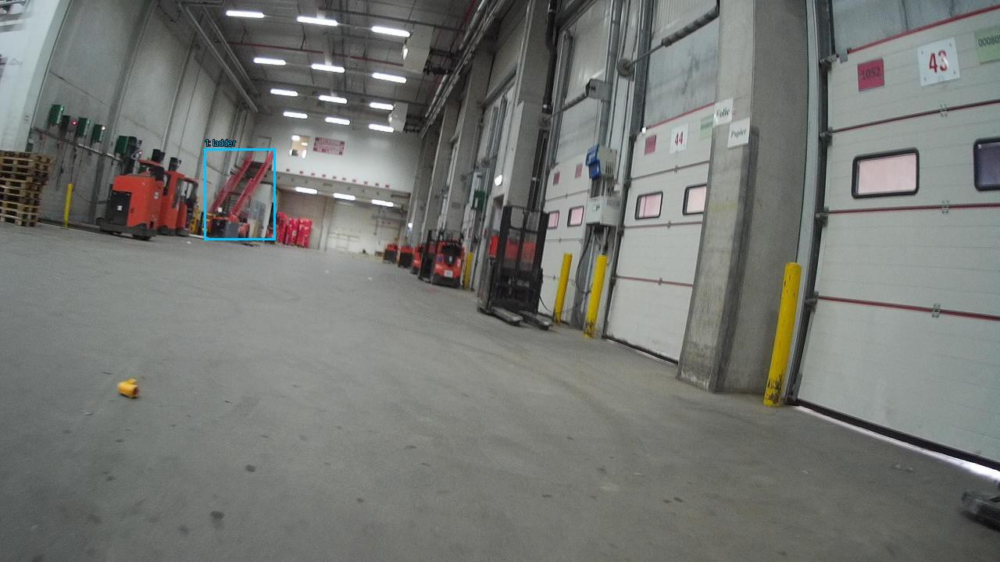

Prejšnji OD (shranjen)


Opis → phrase grounding (nov)

The image shows the interior of a large warehouse or industrial space. The floor is made of concrete and there are several red forklifts parked on the left side of the image. On the right side, there are two large white doors with red and white signs on them. The doors appear to be closed and there is a yellow caution tape on the ground in front of them. In the background, there is another red forklift parked next to the door. The warehouse has a high ceiling with overhead lights and a large window on the wall. The overall atmosphere of the space is clean and well-maintained.

Original · Caption raw · Grounding raw · Koordinate
Številke so lokalni ID regije. Dolge slikovne oznake so skrajšane; spodaj so celotne fraze. Napovedane regije se lahko prekrivajo ali opisujejo skupine.
| ID | Celotna fraza | bbox xyxy |
|---|---|---|
| 1 | The floor | [4.480000019073486, 279.7200012207031, 1272.9599609375, 714.6000366210938] |
| 2 | several red forklifts | [122.23999786376953, 182.52000427246094, 356.47998046875, 311.4000244140625] |
| 3 | several red forklifts | [485.7599792480469, 287.6400146484375, 599.6799926757812, 369.7200012207031] |
| 4 | two large white doors | [767.3599853515625, 6.12000036239624, 1275.52001953125, 592.2000122070312] |
| 5 | two large white doors | [1009.2799682617188, 6.12000036239624, 1276.7999267578125, 596.52001953125] |
| 6 | two large white doors | [768.6399536132812, 6.12000036239624, 928.6399536132812, 470.52001953125] |
| 7 | two large white doors | [769.9199829101562, 122.76000213623047, 922.239990234375, 468.3600158691406] |
| 8 | The doors | [1009.2799682617188, 6.12000036239624, 1278.0799560546875, 596.52001953125] |
| 9 | a yellow caution tape | [972.1599731445312, 330.1200256347656, 1031.0399169921875, 524.52001953125] |
| 10 | another red forklift | [122.23999786376953, 187.5600128173828, 257.91998291015625, 309.2400207519531] |
| 11 | The warehouse | [8.319999694824219, 2.5199999809265137, 612.47998046875, 309.96002197265625] |
| 12 | The warehouse | [224.63999938964844, 2.5199999809265137, 609.9199829101562, 302.0400085449219] |
| 13 | The warehouse | [228.47999572753906, 1.8000000715255737, 607.3599853515625, 177.48001098632812] |